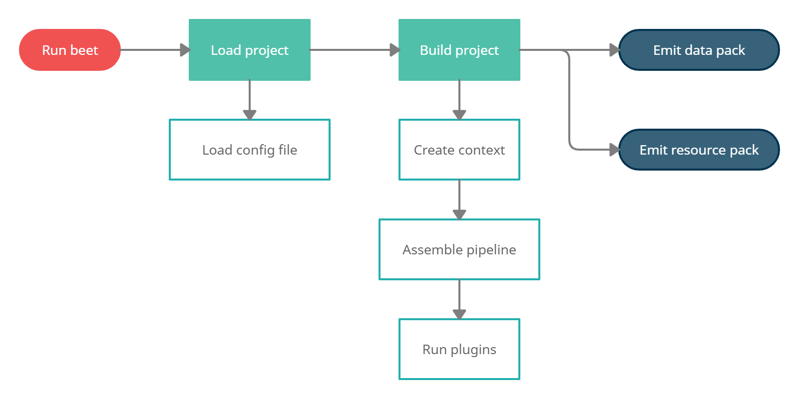

Toolchain documentation¶
The beet toolchain makes it possible to process data packs and resource packs. It provides a unified developer experience for any tool that you might want to use to support your development workflow. The command-line utility allows you to link your project to minecraft and run the build process anytime you make a modification.
This page is still a work-in-progress.
Build process overview¶
The build process is at the core of the beet toolchain. The toolchain first loads your project and config file, and then creates an empty context object holding a blank data pack and a blank resource pack. This context object is then sequentially handed over to each plugin in the beet pipeline configured by your project. The pipeline provides a composable execution model that allows you to combine plugins that cooperate to populate the output data pack and resource pack.

Command-line utility¶
$ beet --help
Usage: beet [OPTIONS] COMMAND [ARGS]...
The beet toolchain.
Options:
-d, --directory DIRECTORY Use the specified project directory.
-c, --config FILE Use the specified config file.
-l, --log LEVEL Configure output verbosity.
-v, --version Show the version and exit.
-h, --help Show this message and exit.
Commands:
build Build the current project.
cache Inspect or clear the cache.
link Link the generated resource pack and data pack to Minecraft.
watch Watch the project directory and build on file changes.
TODO
Configuration file¶
TODO
Plugin pipeline¶
The entire build process revolves around the beet pipeline. The pipeline is responsible for loading and running the provided plugins. Plugins are simple functions that are called one after the other on the context object. The beet context holds all the data related to the build, such as the data pack, the resource pack, the template manager, or the cache handle.
from beet import Context, Function
def greet(ctx: Context):
"""Plugin that adds a function for greeting the player."""
ctx.data["greet:hello"] = Function(["say hello"])
Plugins can require other plugins at any point. Plugins required by other plugins are called plugin dependencies. Requiring a plugin makes sure that the plugin has been executed before going on. The pipeline makes sure that each distinguishable plugin only runs once, allowing multiple plugins to depend on a shared set of plugins. Requiring plugin dependencies effectively extends the pipeline dynamically, while it’s running.
from beet import FunctionTag
def greet_on_load(ctx: Context):
"""Plugin that calls the greeting function on load."""
ctx.require(greet)
ctx.data["minecraft:load"] = FunctionTag({"values": ["greet:hello"]})